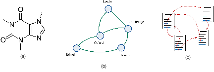
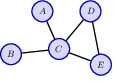
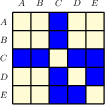
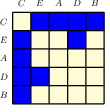
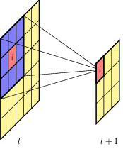
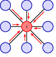
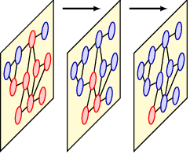
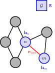
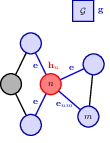
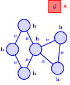

13 Graph neural networks
In previous chapters we have encountered structured data in the form of sequences and images, corresponding to one-dimensional and two-dimensional arrays of variables respectively. More generally, there are many types of structured data that are best described by a graph as illustrated in Figure 13.1. In general a graph consists of a set of objects, known as nodes, connected by edges. Both the nodes and the edges can have data associated with them. For example, in a molecule the nodes and edges are associated with discrete variables corresponding to the types of atom (carbon, nitrogen, hydrogen, etc.) and the types of bonds (single bond, double bond, etc.). For a rail network, each railway line might be associated with a continuous variable given by the average journey time between two cities. Here we are assuming that the edges are symmetrical, for example that the journey time from London to Cambridge is the same as the journey time from Cambridge to London. Such edges are depicted by undirected links between the nodes. For the worldwide web the edges are directed since if there is a hyperlink on page A that points to page B there is not necessarily a hyperlink on page B pointing back to page A.

Other examples of graph-structured data include a protein interaction network, in which the nodes are proteins and the edges express how strongly pairs of proteins interact, an electrical circuit where the nodes are components and the edges are conductors, or a social network where the nodes are people and the edges are ‘friendships’. More complex graphical structures are also possible, for example the knowledge graph inside a company comprises multiple different kinds of nodes such as people, documents, and meetings, along with multiple kinds of edges capturing different properties such as a person being present at a meeting or a document refer- encing another document.
In this chapter we explore how to apply deep learning to graph-structured data. We have already encountered an example of structured data when we discussed images, in which the individual elements of an image data vector x correspond to pixels on a regular grid. An image is therefore a special instance of graph-structured data in which the nodes are the pixels and the edges describe which pixels are adjacent. Convolutional neural networks (CNNs) take this structure into account, incorporating prior knowledge of the relative positions of the pixels, together with the equivariance of properties such as segmentation and the invariance of properties such as classification. We will use CNNs for images as a source of inspiration to construct more general approaches to deep learning for graphical data known as graph neural networks (Zhou et al., 2018; Wu et al., 2019; Hamilton, 2020; Veličković, 2023). We will see that a key consideration when applying deep learning to graph-structured data is to ensure either equivariance or invariance with respect to a reordering of the nodes in the graph.
13.1 Machine learning on graphs
Graph properties include features such as connectivity, the presence of cycles, community structure, and other characteristics that can inform both the structure of the neural network model and the features used within those models.
An adjacency matrix is a fundamental way to represent a graph. It captures the presence or absence (and sometimes the weight) of edges between nodes in the graph. This matrix plays a critical role in the operations of GNNs, particularly in defining graph convolution operations.
Permutation Equivariance is a desirable property in graph neural networks, ensuring that the output of the GNN does not change when the nodes of the input graph are reordered. This property is crucial for learning consistent representations of graphs regardless of node ordering.
13.1.1 Graph properties
13.1.2 Adjacency matrix
  
13.1.3 Permutation equivariance
13.2 Neural message passing
13.2.1 Convolutional filters
 
13.2.2 Graph convolution networks (GCN)
Each node has an associated hidden variable that stores the aggragated info from all its neighbours. Each layer of the network updates the node embedding using the hidden state.
algo13.1 simple message passing neural network. Aggregate then update.
13.2.3 Aggregation operators

13.2.4 Update operators
13.2.5 Node classification
13.2.6 Edge classification
13.2.7 Graph classification
13.3 General graph networks
13.3.1 Graph attention networks
13.3.2 Edge embedding
13.3.3 Graph embedding
Algo13.2: general graph network training scheme.
- update edge embeddings
- aggregate node info
- update node embeddings
- update graph embedding.
  